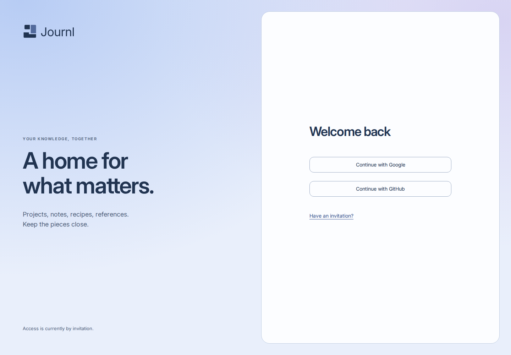
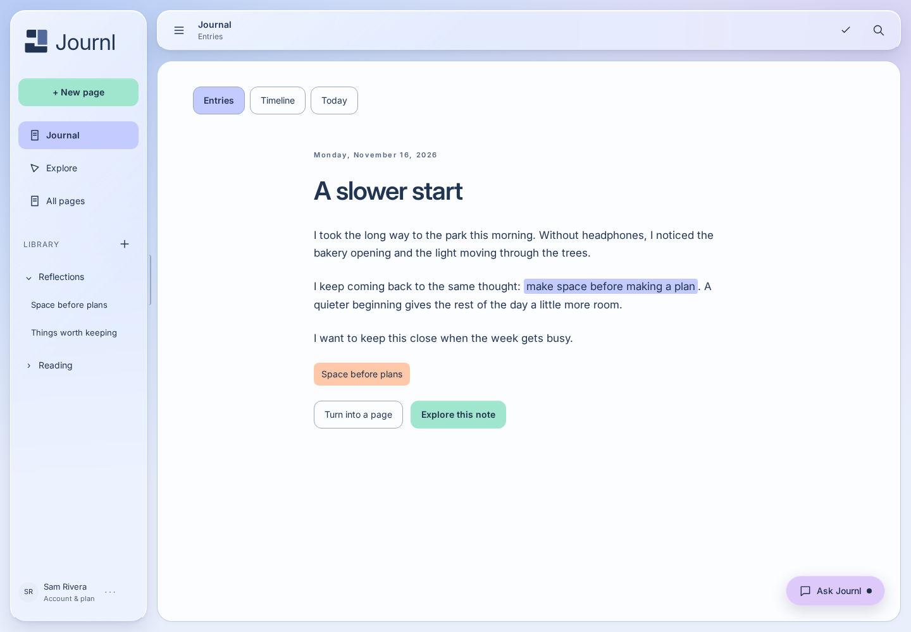
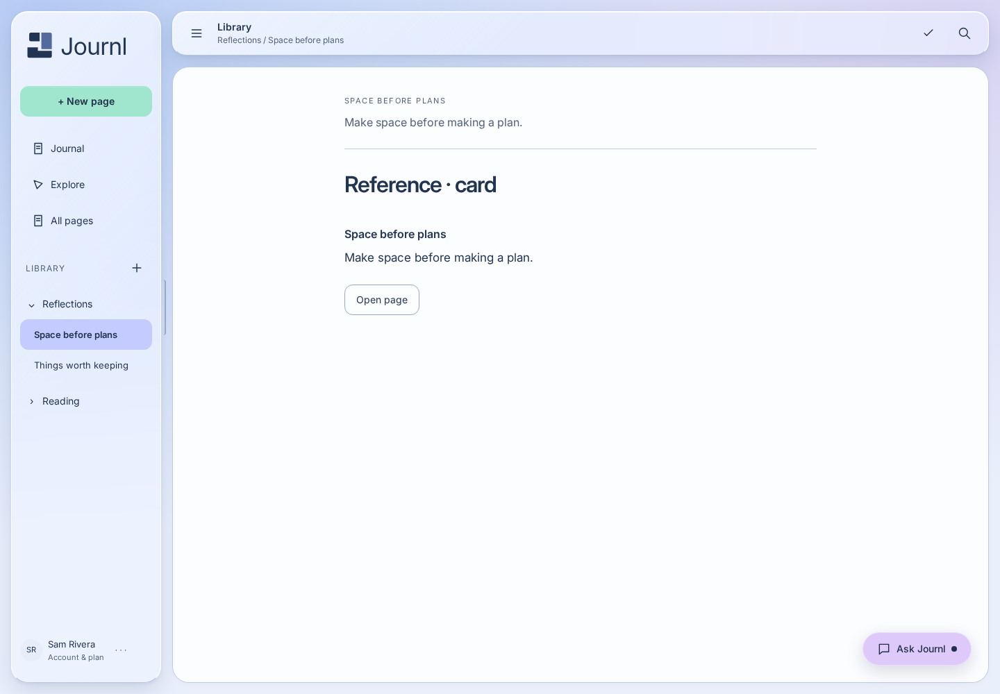
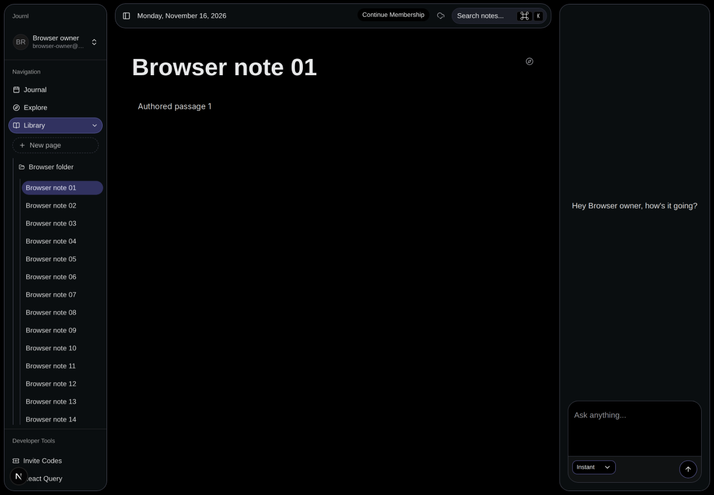

Auth

Review auth →JOURNL · APPROVED DESIGN HANDOFF V6
438 authored states, including all 422 baseline IDs. 1830 canonical renders across light and dark, desktop and mobile, with tablet views where layouts change.
Current browser evidence remains separate from proposed design coverage. Historical access gaps have not been closed by source inspection or scene rendering.

Review auth →
Review journal → Review library →
Review library → Review explore →
Review explore → Review chat →
Review chat → Review recovery →
Review recovery → Review account →
Review account → Review billing →
Review billing → Review shared →
Review shared → Review editor →
Review editor →
Review references → Review marketing →
Review marketing →

Search a route, surface, state ID or source path. Each result opens its family gallery with actual embedded images.
| State and surface | Family and route | Current browser evidence | Canonical images by viewport |
|---|